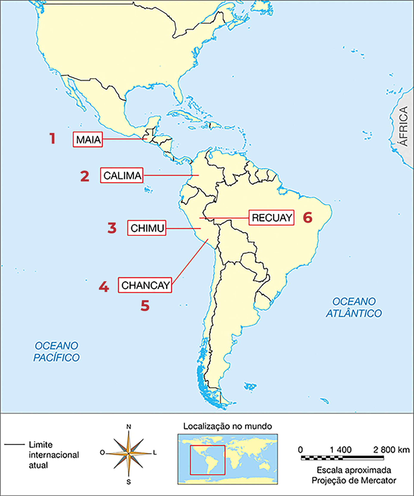
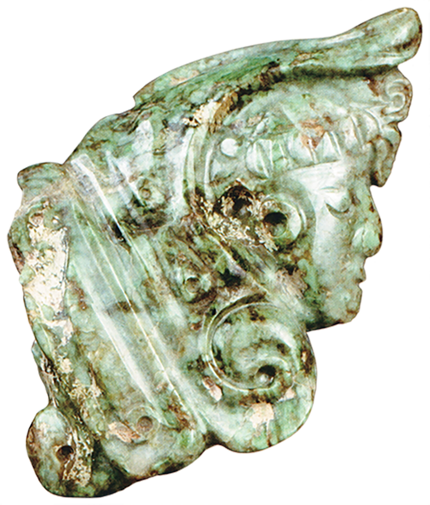
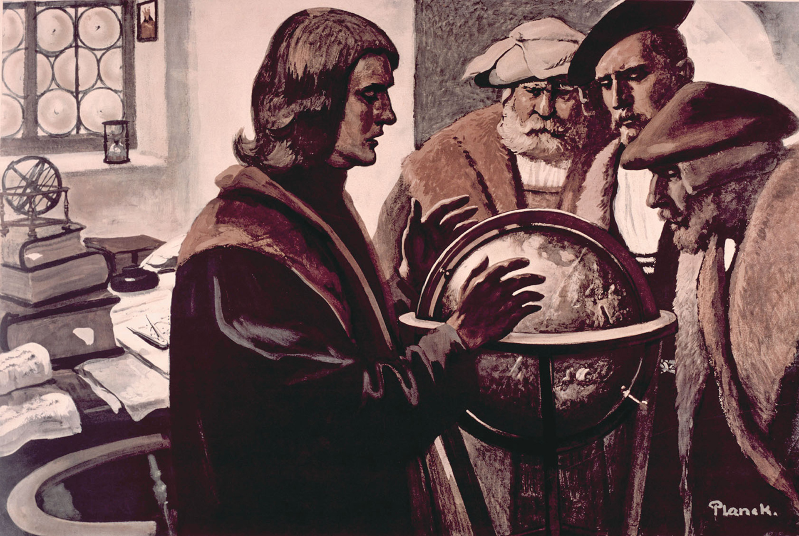

RIGAUD, Hyacinthe. Retrato de Luís XIV. 1701. 1 óleo sobre tela, color., 279 cm × 190 cm. Museu do Louvre, Paris.
“Desde que Deus Nosso Senhor deu forma a Adão, nosso primeiro pai, e a Eva, com suas mãos, até hoje, jamais houve cristão, sarraceno, pagão, tártaro, hindu, ou outro homem de qualquer espécie, que tenha visto, conhecido ou estudado
tantas coisas nas diversas partes do mundo, nem tão grandes maravilhas, como disse Marco Polo; nenhum outro fez tantas viagens nem teve tantas ocasiões de ver e de compreender.”
RUSTICHELLO DE PISA. 1298. In: DRÈGE, Jean-Pierre. Marco Polo e a rota da seda. Rio de Janeiro: Objetiva, 2002.
Introdução
Os documentos apresentados são referentes ao viajante Marco Polo, que realizou uma grandiosa viagem ao Oriente durante o século XIII.
De acordo com o texto de Rustichello de Pisa, o que levou Marco Polo a ser um homem diferente para a época em que viveu?
Objetivos
Retomar informações sobre o comércio que era praticado pelos europeus com Oriente durante a Baixa Idade Média.
Estabelecer relação entre a formação dos Estados Nacionais Modernos, o desenvolvimento da classe burguesa e o expansionismo marítimo.
Compreender os principais fatores que possibilitaram Portugal ser o pioneiro nas Grandes Navegações.
Compreender as principais características do expansionismo espanhol, com destaque para as teorias defendidas por Cristóvão Colombo.
Analisar a chegada à América, por Portugal e Espanha, e a disputa pela posse das terras encontradas.
Compreender as principais características do expansionismo francês, inglês e dos Países Baixos.
Nos capítulos anteriores, você estudou que o fim da Idade Média e o início da Idade Moderna foram marcados por uma série de transformações: o Renascimento Comercial e Urbano, a Crise do Século XIV, o fortalecimento da burguesia e a
diminuição do poder da nobreza proprietária de terras, a centralização do poder nas mãos dos reis e a formação dos Estados Nacionais Modernos.
Todos esses fatores colaboraram para o processo de expansão marítima europeia a partir do século XV. O expansionismo marítimo foi também denominado de Grandes Navegações.
A crise que ocorreu na Europa no século XIV foi responsável por uma significativa diminuição da população europeia. Vamos recordar os principais acontecimentos desse período?
Organize as ideias
Na Europa, o século XIV foi caracterizado por uma série de elementos que, em seu conjunto, recebeu a denominação Crise do Século XIV. A respeito desse assunto, numere a segunda coluna de acordo com a primeira.
( 1 ) Fome
( 2 ) Peste Negra
( 3 ) Revoltas populares nos campos e na cidade
( 4 ) Guerra dos Cem Anos
(___) Ocorreu entre França e Inglaterra em decorrência de disputas por territórios. O confronto entre esses dois reinos contribuiu para diminuir a população europeia.
(___) Espalhou-se rapidamente por toda a Europa por causa das precárias condições de higiene das cidades medievais e, também, em razão do enfraquecimento das pessoas ocasionado pela falta de alimentos.
(___) Resultou do esgotamento dos campos de cultivo e do comprometimento das lavouras futuras.
(___) A situação de pobreza extrema, bem como as péssimas condições de trabalho e de moradia, motivou os conflitos entre trabalhadores e senhores feudais e mestres de ofício nas cidades.
A crise na produção de alimentos durante o século XIV deixou evidente o esgotamento das terras cultiváveis da Europa. Era necessário, portanto, encontrar novas terras para suprir a necessidade de alimentos da população europeia que,
após uma drástica diminuição, voltou a aumentar no fim do mesmo século. Apesar da retomada do crescimento populacional, faltava mão de obra nos campos e nas cidades.
Comércio com o Oriente
O comércio com o Oriente, de onde partiam para a Europa diversos produtos, como temperos e artigos de luxo (tapetes, seda, perfumes, etc.), era monopolizado pelas cidades de Gênova e Veneza. Esses produtos, pela escassez na Europa,
eram denominados de especiarias. Essas cidades, por exigência dos árabes, pagavam em ouro e prata pelos produtos comercializados. Quando, em 1453, Constantinopla foi tomada pelos turco-otomanos,
os produtos orientais tornaram-se ainda
mais caros e escassos, pois as rotas terrestres das especiarias eram controladas por eles. Assim, passaram a exigir maior quantidade de prata e ouro para manterem o comércio.
Para tratar do domínio dos turcos sobre a cidade de Constantinopla, a expressão “tomada de Constantinopla pelos turcos” é normalmente empregada. A expansão promovida pelos turcos iniciou-se no século XI e gerou a
ocupação de inúmeras
porções de terra no atual
Oriente Médio, além de regiões da Europa próximas ao Mar Mediterrâneo e norte da África.
As especiarias eram os principais produtos que os europeus buscavam no Oriente para revender no Ocidente. Uma das mais valorizadas era a pimenta. Descubra a importância desse produto no texto a seguir.
Chegado o outono na Europa, por falta de forragem, fazia-se necessário matar grande parte do gado. A carne bovina, mesmo conservada, salgada ou defumada, apodrecia facilmente. As populações costeiras e ribeirinhas podiam optar pelo
consumo de peixe fresco. Porém, os habitantes de outras partes do continente não tinham escolha além das carnes fortemente temperadas com condimentos picantes e odoríferos – em especial a pimenta – única maneira de torná-las
consumíveis. Contra a escassez constante de alimentos, em meio ao mau cheiro e adiantado estado de putrefação, a saída era pimenta farta.
Desde a Antiguidade, a pimenta se prestava a essa função. No entanto, o esfacelamento do Império Romano encarecera o transporte terrestre e impossibilitara o trânsito regular pelo mar Mediterrâneo – de resto, sempre infestado de
piratas. [...]
RAMOS, Fábio P. Por mares nunca dantes navegados: a aventura dos descobrimentos. São Paulo: Contexto, 2008. p. 16.
Castello di Issogne, Valle d’Aosta
BOTICA do século XV. 1 iluminura. Castello di Issogne, Valle D’Aosta.
Botica era a denominação dada às antigas farmácias. Nelas, as especiarias eram comercializadas em pequenas porções e a preços bastante elevados no continente europeu, sendo a pimenta uma das mais consumidas. Na imagem, um
boticário é representado pesando o produto que está sendo adquirido por uma mulher.
Pesquisa
Além da pimenta, vários outros temperos eram muito desejados pelos europeus. Faça uma pesquisa e descubra que produtos eram esses e de que forma eram utilizados. Registre as informações encontradas em um cartaz, com imagens das
especiarias citadas.
Cotidiano
Em relação aos temperos que utilizamos na atualidade, responda, em seu caderno, às seguintes questões propostas.
Os temperos utilizados em nossa culinária mantêm a mesma função que tinham na Europa no início da Idade Moderna? Explique sua resposta.
Faça uma pesquisa e descubra se é aconselhável a ingestão de alimentos muito temperados.
Alianças entre Estado, burguesia e Igreja
Após a interrupção do comércio europeu com Constantinopla, alguns reinos e companhias marítimas passaram a buscar novas rotas para o Oriente dando fim ao monopólio comercial de genoveses e venezianos.
Por causa dessa necessidade de abertura de novas rotas para o Oriente, um dos trajetos, denominado périplo africano, consistia em contornar o continente africano até se chegar às Índias, um
grande entreposto comercial de produtos orientais. Essa empreitada, no entanto, precisava de altos investimentos – era necessário construir navios, desenvolver equipamentos de navegação, contratar tripulações, etc. Para tal
empreendimento, os reis receberam auxílio da burguesia e da Igreja. Assim, vários setores da sociedade se uniram: reis, burguesia, parte da nobreza e Igreja. Você consegue imaginar o interesse de cada um dos grupos nessas expedições?
périplo: nome dado a uma viagem feita ao redor de um continente, sem que as embarcações se distanciem muito do litoral.
Organize as ideias
Complete o quadro a seguir relacionando cada grupo ao respectivo interesse nas expedições do século XIV.
Interesse
Grupo
Desejava expandir a fé católica e conquistar mais fiéis.
Desejava fortalecer a economia, tornando o reino poderoso e rico. Queria ainda expandir o próprio poder, conquistando novos territórios.
Desejava encontrar mercadorias que pudessem ser revendidas com altos lucros.
Pioneirismo português
O primeiro reino a se lançar na expansão marítima foi Portugal. Isso aconteceu por vários motivos, como o fato de o processo de centralização política e unificação territorial haver começado mais cedo em Portugal do que em outros
reinos europeus, além da localização que favorecia a navegação no Oceano Atlântico. Em 1139, D. Afonso Henriques tornou o território português independente do Reino de Leão.
Com a chegada de D. João ao poder (1385), iniciou-se uma grande transformação econômica no reino. Aliados aos burgueses, os reis da Dinastia de Avis promoveram uma dinamização da economia interna do reino e investimentos no comércio
marítimo. O objetivo principal era encontrar uma rota marítima para o Oriente, a fim de comprar especiarias e revendê-las aos demais reinos europeus, alcançando, assim, altos lucros.
D. Henrique, filho de D. João, foi muito importante nesse projeto. Ele tinha grande interesse por navegação e, por essa razão, atraiu para a cidade de Sagres muitos navegadores, cosmógrafos, cartógrafos, mercadores e aventureiros.
Reunidos, conseguiram desenvolver conhecimentos sobre técnicas de navegação e equipamentos. Eles acreditavam que contornando o continente africano conseguiriam chegar ao Oriente. Por esse motivo, a expansão marítima de Portugal optou
pelo périplo africano.
Latinstock/Akg-images/Album
LOPES, Adriano de S. Infante D. Henrique, o navegador. 1940. 1 pintura, color., 327 cm x 239 cm. Instituto Ibero-Americano, Berlim.
O imaginário europeu
Além de todo o aparato necessário e de todas as dificuldades para a realização de uma viagem marítima durante os séculos XV e XVI, é importante destacar o imaginário europeu em relação ao desconhecido.
A falta de conhecimento dos europeus sobre o Oceano Atlântico acabou gerando espaço para superstições, lendas e crendices.
Muitos chamavam o Oceano Atlântico de Mar Tenebroso, pois o imaginavam povoado por monstros marinhos e com portais que levavam os marinheiros menos avisados diretamente para o inferno.
Tais lendas eram reforçadas pelos naufrágios causados pela fragilidade das embarcações e pela precariedade dos meios de localização. Além disso, algumas teorias afirmavam que a Terra era plana, o que fazia os marinheiros temerem
cair no espaço infinito ao se afastarem muito da costa europeia.
Fundação Biblioteca Nacional, Rio de Janeiro
MÜNSTER, Sebastian. Typus Orbis Universalis. 1552. 1 mapa, color., 36 cm × 25 cm. Fundação Biblioteca Nacional, Rio de Janeiro.
Segundo o historiador Fábio Pestana Ramos (2008), o Cabo Bojador inspirava medo até mesmo nos navegadores mais experientes. Eles acreditavam que, depois desse Cabo, não existiam mais seres vivos, inclusive plantas. Também
acreditavam que as terras seriam arenosas, não haveria mais água e nada que permitisse o reabastecimento. Imaginavam ainda que as correntes marítimas e os ventos contrários impediriam o retorno à casa e que monstros marinhos
gigantescos poderiam virar as embarcações e matar todos os tripulantes. Algumas dessas inquietações foram retratadas neste mapa, confeccionado pelo geógrafo alemão Sebastian Münster em 1552.
Para vencer tais medos, foi necessário que homens muito destemidos desafiassem esses pensamentos tidos como verdadeiros e buscassem suas próprias verdades.
Biblioteca Nacional da França, Paris
HONDIUS, Jodocus. América. 1628. 1 mapa, color., 37 cm × 50,2 cm. Biblioteca Nacional da França, Paris.
Mesmo depois de várias viagens e do conhecimento de muitas terras e novos oceanos, diversos cartógrafos registraram temor em relação aos seres desconhecidos dos mares. No canto inferior esquerdo da imagem, está representado um
ritual antropofágico.
Pesquisa
Apesar de todas as lendas e do medo que os europeus do início da Idade Moderna tinham do Mar Tenebroso, eles navegaram para longe e conquistaram terras em outros continentes.
Você já pensou em como os navegantes se orientavam no mar sem a tecnologia que temos atualmente? Faça uma pesquisa sobre os principais instrumentos de navegação utilizados na época das Grandes Navegações. Organize as
informações que coletou no espaço que segue.
Interpretando documentos
Sabemos que o plano dos portugueses para chegar às Índias consistia em contornar a África navegando pelos oceanos Atlântico e Índico. Observe o mapa a seguir em que é possível ver o périplo africano.
Luciano Daniel Tulio
Fonte: ALBUQUERQUE, Manoel M. de. Atlas histórico escolar. Rio de Janeiro: Fename, 1977. p. 98. Adaptação.
Após a análise do mapa, responda a estas questões.
A que local os portugueses primeiro chegaram? Em que data isso ocorreu?
Por quais outros locais os portugueses passaram durante o périplo? Em que período isso ocorreu?
Nos locais pelos quais passavam, os portugueses construíam feitorias, fortificações onde comercializavam com os habitantes da região. Para a Europa, levavam ouro, pedras preciosas e marfim da África, produtos que eram revendidos com
altos lucros, além de africanos para serem vendidos como escravizados.
O projeto de contornar a África para chegar até o Oriente estava indo bem até os portugueses atingirem o sul do continente. Em 1488, Bartolomeu Dias atingiu um cabo muito difícil de atravessar – havia tempestades que lançavam suas
embarcações para o alto-mar. Na impossibilidade de continuar a viagem, Bartolomeu Dias batizou a ponta sul da África de “Cabo das Tormentas” e retornou a Portugal. O rei João II mudou o nome para “Cabo da Boa Esperança”, pois atingir o
sul da África mostrava que era possível chegar às Índias (é importante lembrar que muitas das lendas da época afirmavam que não havia oceano ao sul da África, o que tornava impossível realizar o périplo africano).
Apenas dez anos depois, em 1498, Vasco da Gama conseguiu finalmente chegar às Índias. Desde então, Portugal passou a dominar o comércio de especiarias na Europa, obtendo muitos lucros com a venda dessas mercadorias.
Em 1500, o navegador Pedro Álvares Cabral, a caminho do Oriente, distanciou-se do litoral africano chegando às terras que atualmente formam o Brasil. Entretanto, antes dele, outro navegador, a serviço da Espanha, já havia chegado às
terras desse continente, o qual foi posteriormente chamado de América. O nome desse navegador era Cristóvão Colombo.
Troca de ideias
Reúna-se com um colega e analisem os documentos a seguir.
Documento 1
Os hábitos de higiene eram precários. Proliferavam pelos corpos os insetos parasitas: pulgas, percevejos e piolhos. O mau cheiro se acumulava, tornando-se, em pouco tempo, insuportável. Ao que muitos vinham a adoecer do estômago,
com fortes enjoos.
A fome era uma constante. Os armazéns de Lisboa nunca abasteciam as naus e caravelas com a quantidade ideal de víveres, sendo praxe, por exemplo, fornecer alimentos para apenas quatro meses, em uma viagem que se sabia durar pelo
menos sete, como era o caso na rota da Índia. Assim formava-se a bordo um mercado negro, controlado por oficiais mais graduados. Excetuando-se o biscoito, o vinho e a água de regra, todos os mantimentos, inclusive aqueles destinados
ao socorro dos doentes, eram vendidos a quem pagasse mais, forçando os mais pobres a recorrer à caça de ratos e baratas que infestavam as embarcações, quando não ao canibalismo dos companheiros mortos, para se alimentar.
RAMOS, Fábio P. Por mares nunca dantes navegados: a aventura dos descobrimentos. São Paulo: Contexto, 2008. p. 26 e 27.
Documento 2
Biblioteca Nacional da Espanha, Madri
[NAUFRÁGIO]. Ilustração, p&b. In: LINSCHOTEN, Jan H. van. Relato de viagens às Índias Orientais. 1598. Biblioteca Nacional da Espanha, Madri.
Os naufrágios eram frequentes e causavam mortes, além de prejuízos para os donos das embarcações. O naufrágio representado na imagem ocorreu próximo ao Arquipélago de Açores.
Tomando por base as condições da expansão marítima e os documentos analisados, elabore com seu colega uma resposta à pergunta: O que motivava as pessoas a se lançarem nas navegações mesmo diante das dificuldades pelas quais passariam?
Registre a resposta no espaço a seguir.
Viagens espanholas
Enquanto Portugal iniciava seu processo de expansão marítima, no começo do século XV, a atual Espanha (que nesse período abrigava o Reino de Castela) estava passando por um grande conflito – a
tentativa de expulsão dos muçulmanos de seu território.
O Reino de Castela estava localizado no norte da Península Ibérica. Em 1469, a rainha Isabel de Castela casou-se com o rei Fernando de Aragão, formando, assim, o Reino da Espanha.
Os muçulmanos ocuparam a região da Península Ibérica no século VIII. Portugal expulsou-os do território em 1249, no entanto, eles se mantiveram em Castela até 1492, quando foram desterrados. Na Europa, os muçulmanos eram também
chamados de mouros, palavra utilizada para denominar os habitantes da Mauritânia, no norte da África. Como os muçulmanos chegaram à Península Ibérica vindos do norte da África, passaram a receber tal denominação.
A primeira viagem financiada pela Espanha foi a do navegador Cristóvão Colombo, que acreditava na esfericidade da Terra e pretendia chegar até às Índias por um novo caminho – circundando a Terra em vez de contornar o continente
africano. Munido de mapas produzidos pelo geógrafo Paolo Toscanelli (que reforçavam a teoria da esfericidade), Colombo, primeiramente, solicitou patrocínio ao infante D. Henrique de Portugal. Entretanto, como o plano de Portugal para
chegar as Índias consistia em realizar o périplo africano, tal patrocínio foi negado. Por conta disso, Cristóvão Colombo então ofereceu seus préstimos aos reis espanhóis, que patrocinaram a viagem esperando obter grandes lucros caso
Colombo estivesse correto sobre o novo caminho para as Índias.
A rainha Isabel de Castela concedeu a Cristóvão Colombo três embarcações, que partiram do Porto de Palos em 3 de agosto de 1492 rumo ao Ocidente. Em 12 de outubro, Colombo atingiu a Ilha de Guanahani, localizada na América Central, e
acreditou ter chegado às Índias. Por causa desse equívoco, os habitantes naturais da América foram chamados de índios.
O navegador português Fernão de Magalhães, a serviço do rei espanhol, realizou a primeira viagem de circum-navegação da Terra. Em 1519, ele partiu com 5 navios e 265 marinheiros, com o objetivo de chegar às Índias. Sua rota pretendia
cruzar o Oceano Atlântico, contornar o sul da América e atravessar o Oceano Pacífico. Essa viagem demorou 3 anos. Em 1522, apenas um navio, com 18 marinheiros sobreviventes, aportou em Sevilha, na Espanha, completando a viagem. Fernão
de Magalhães havia morrido no ano anterior, nas Filipinas. A Espanha entendia que chegar ao Oriente pelo Oceano Pacífico significava fazer uma viagem longa e dispendiosa – embora tenha sido lucrativa, pois o navio voltou carregado de
pimenta e de cravo.
Acervo Lys Villela
CRISTÓVÃO Colombo apontando para a América. 1 escultura em bronze. Museu Marítimo de Barcelona, Barcelona.
Interpretando documentos
Analise o mapa e um fragmento de texto a seguir, em que se narra a chegada da expedição de Colombo às terras que ele acreditava serem as Índias.
Luciano Daniel Tulio
Fonte: ALBUQUERQUE, Manoel M. de. Atlas histórico escolar. Rio de Janeiro: Fename, 1977. p. 98. Adaptação.
Ao amanhecer, os navios se aproximaram da terra e... nada dos palácios com tetos dourados. Tudo o que se via era uma formosa praia e, mais distante, uma vigorosa floresta. Também se ouvia o canto de muitas espécies de pássaros.
Em certo momento, como era de se esperar, começaram a surgir da floresta os habitantes daquelas terras. Se ali era o país das Índias, aqueles homens só podiam ser os “índios”, que foi como Colombo imediatamente passou a chamá-los.
Para espanto dos navegantes e, ao contrário do que esperavam, aquelas pessoas não se apresentavam vestidas de túnicas de seda, nem mesmo de camisolas de algodão! Estavam vestidas de... de nada.
CAMARGO, Antônio José Lucas. Cristóvão Colombo: a América descoberta por engano. São Paulo: Moderna, 1992. p. 25-26.
De acordo com os documentos, responda às seguintes questões.
a) Colombo acreditava ter chegado às Índias. De acordo com o mapa, aonde Colombo chegou?
b) De que forma a denominação “índios” para os habitantes da América está relacionada ao equívoco de Colombo com o local ao qual chegou?
c) Por quais oceanos a expedição de Fernão de Magalhães navegou?
Conexões
No século XIII, viveu o navegador Marco Polo. Ele, em suas aventuras marítimas, teria passado pelas terras do Oriente e as descrevia como imensamente ricas, com palácios e templos cobertos de ouro e abundância de seda. As crônicas de
Marco Polo alimentavam a imaginação de Colombo, que esperava encontrar muitas riquezas em sua viagem.
Faça uma pesquisa sobre as viagens de Marco Polo e, depois, responda às seguintes questões.
Quais são os pontos em comum que podemos traçar sobre as viagens promovidas por Marco Polo e Cristóvão Colombo?
Quais são as diferenças entre a descrição de Marco Polo sobre o Oriente e as terras onde Colombo aportou em 1492?
Outras versões
A obra a seguir representa o encontro entre duas culturas totalmente distintas – espanhóis e indígenas – quando Cristóvão Colombo chegou à América.
Esse quadro foi produzido muito depois de 1492, entre os anos de 1837 e 1847. Dessa forma, podemos dizer que a cena retratada é o modo como o autor da pintura, chamado John Vanderlyn, imaginou a cena, o que não significa que ela
represente fielmente o que aconteceu em 1492. Observe.
VANDERLYN, John. Chegada de Colombo à Guanahani,1492. [entre 1837 e 1847]. 1 óleo sobre tela, color., 365 cm × 548 cm. Capitólio dos Estados Unidos, Washington.
Essa obra foi concebida com a intenção de enaltecer a figura de Colombo e dos europeus conquistadores. Os nativos são retratados como animais selvagens.
E você? Como imagina ter sido o encontro entre essas duas culturas tão diferentes?
Você pode imaginar as estranhezas causadas em ambos os povos nesse encontro?
Em uma folha de papel sulfite, produza uma história em quadrinhos retratando esse encontro inusitado.
Novos mundos e a divisão das terras
Enquanto Portugal se voltava para a conquista de territórios na África e para o comércio com o Oriente, os espanhóis chegaram a um território até então desconhecido para os europeus, o qual, posteriormente, foi batizado de América.
Apenas após a morte de Cristóvão Colombo, em 1504, outro navegador, chamado Américo Vespúcio, confirmou que as terras encontradas eram um “novo” continente. Em homenagem a Américo Vespúcio, foi dado a esse continente o nome de América.
Portugal e Espanha eram, portanto, os dois reinos que dominavam a navegação no fim do século XV. Assim, mesmo antes da confirmação de que as terras aportadas por Colombo eram um novo continente, Portugal e Espanha trataram de
estabelecer quais das terras encontradas pertenceriam a cada um desses reinos. O papa Alexandre VI julgou a disputa e estabeleceu uma linha imaginária 100 léguas a oeste do arquipélago de Cabo Verde. As terras a oeste da linha
pertenceriam à Espanha, e as que se situavam a leste, a Portugal. Tal resolução foi registrada em um documento chamado Bula Inter Coetera (1493).
O rei português D. João II, no entanto, questionou a decisão do Papa, que era espanhol de nascimento. Assim, um novo acordo foi firmado entre eles, determinando uma linha que passava a 370 léguas do arquipélago de Cabo Verde como
fronteira entre Espanha e Portugal. O novo tratado foi denominado Tratado de Tordesilhas (1494).
Linhas de demarcação entre os domínios de Espanha e Portugal
Luciano Daniel Tulio
Fonte: ATLAS de la historia del mundo. Barcelona: Parragon Books, 2006. Adaptação.
Viagens marítimas da França, da Inglaterra e dos Países Baixos
Espanha e Portugal tentavam guardar segredo sobre suas descobertas para os demais Estados europeus. No entanto, a movimentação de embarcações em seus portos chamava a atenção de estrangeiros, que se esforçavam para conseguir
informações sobre o destino das expedições.
Segundo o historiador John Hale, alguns chegavam até mesmo a subornar navegadores para ter acesso a seus mapas marítimos. Assim, as informações acerca das novas terras descobertas foram pouco a pouco se espalhando pela Europa.
Inglaterra, França e Holanda se interessaram pela empreitada marítima que poderia lhes render muitos lucros. No entanto, como Portugal e Espanha já haviam conquistado a costa africana e parte do continente americano, coube aos outros
reinos europeus ocupar algumas ilhas na região do Caribe e terras na região que atualmente pertence à América do Norte. Esses reinos, contudo, não estavam satisfeitos com a divisão que Portugal e Espanha haviam feito das terras
recém-conhecidas. Por causa disso, o rei da França, Francisco I, teria dito “Gostaria muito de ver no testamento de Adão a passagem em que ele divide o Novo Mundo entre meus irmãos, o imperador Carlos V e o rei de Portugal”.
Já que não podiam se apossar das terras, navegantes ingleses, franceses e holandeses começaram a praticar a pirataria para retirar riquezas desses locais. Além disso, alguns lugares de colonização portuguesa ou espanhola foram
ocupados.
Outras histórias
Enquanto os europeus promoviam seus estudos náuticos e realizavam as Grandes Navegações, o continente americano estava todo habitado por povos de diversas culturas e diferentes organizações políticas, econômicas e sociais.
Antes da chegada dos europeus, muitos desses povos desapareceram ou se uniram dando origem a vastos impérios. Os contatos comerciais e as guerras também fizeram parte do cotidiano desses povos.
Observe o mapa e aprecie exemplos de produções materiais de alguns povos americanos. Esses objetos nos ajudaram a conhecer um pouco da cultura americana pré-colombiana.
Culturas dos povos ameríndios

Luciano Daniel Tulio
Fonte: CENTRO CULTURAL BANCO DO BRASIL. Por ti América: arte pré-colombiana. Rio de Janeiro, 2006. Adaptação.

Secretaria de Cultura-INAH-MEX
PENDENTE antropomorfo maia. [entre 300 a.C. até o contato com os espanhóis]. 1 pendente de pedra verde, 4,4 cm × 1,3 cm × 5,4 cm. Museu do Templo Maior, Cidade do México. Reprodução autorizada pelo Instituto Nacional de
Antropologia e História.

Colección Museo del Oro – Banco de la Republica Foto: Clark M. Rodríguez
BRINCOS calima [entre 200 a.C. e 1300]. 2 brincos em ouro, 24 cm × 6,5 cm. Museu do Ouro Banco da República, Bogotá.
Museu de Arqueologia e Etnologia da Universidade de São Paulo
VASO de gargalo chimu. [entre 900 e 1400]. 1 cerâmica, 24 cm × 10 cm × 17 cm. Museu de Arqueologia e Etnologia USP, São Paulo.
Museu Metropolitano de Arte, Nova Iorque
PAINEL chancay. [entre 1100 e 1400]. Pintura em algodão. Museu Metropolitano de Arte, Nova Iorque.
Museu de Arqueologia e Etnologia da Universidade de São Paulo
JARRA antropomorfa chancay. 1 cerâmica, 37cm x 21 cm. Museu de Arqueologia e Etnologia USP, São Paulo.